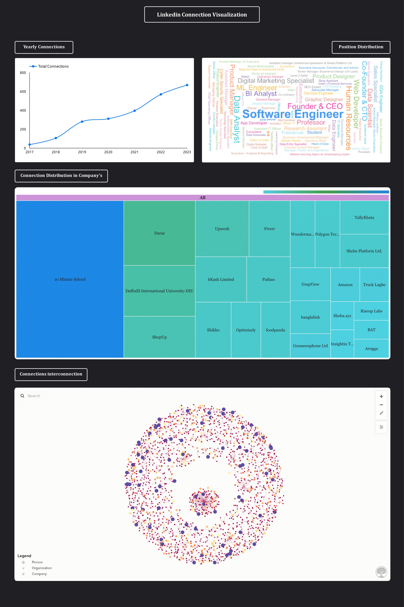

<div class="container">
                <div class="row mh-portfolio-modal-inner">
                    <div class="col-sm-5">
                        <h2>Linkedin Connection Visualization</h2>
                        <p>In our day-to-day corporate life, Linkedin became an essential part of communication. We
                            connect with various professionals throughout our career progression.
                            Hence, Linkedin does not give any built-in visualization for understanding our
                            network.<br><br>

                            You can easily Download your LinkedIn connection information as CSV and make beautiful
                            visualization from it. Which will help you to find many potential insights.

                        </p>
                        <div class="mh-about-tag">
                            <ul>
                                <li><span>Data Analytics</span></li>
                                <li><span>Google Sheet</span></li>
                                <li><span>Looker Studio</span></li>
                                <li><span>Kumu</span></li>

                            </ul>
                        </div>
                        <a href="https://lookerstudio.google.com/u/1/reporting/276b3f57-2545-4161-85da-7ddbd9849f72/page/Hct0C"
                            target="_blank" rel="noopener noreferrer" class="btn btn-fill">Source: Looker Studio <span class="icon-external-link" aria-hidden="true"></span></a>
                        <br><br>
                        <a href="https://medium.com/@niloy.swe/linkedin-personal-data-visualization-b139f8829c43"
                            target="_blank" rel="noopener noreferrer" class="btn btn-fill">Source: Medium - Step by step procedure <span class="icon-external-link" aria-hidden="true"></span></a>
                    </div>
                    <div class="col-sm-7">
                        <div class="mh-portfolio-modal-img">
                            
                        </div>
                    </div>
                </div>
            </div>
